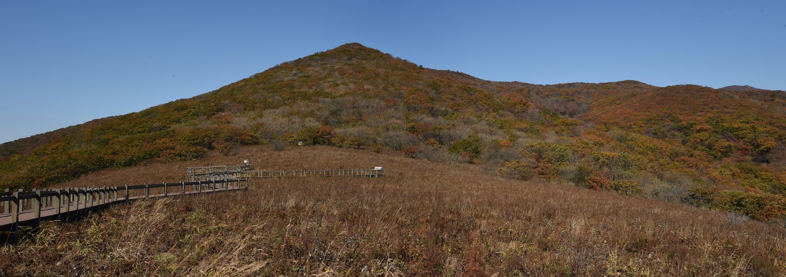

점봉산은 강원 인제와 양양에 걸친 설악산 남쪽 능선의 산으로, 설악산국립공원 점봉산 구간에 속합니다. 산 전체가 생태계 보전 가치가 높아 정상부는 일반인의 출입이 제한됩니다.
대신 점봉산 자락의 곰배령(1,164m)까지는 산림생태탐방으로 열려 있습니다. 곰배령은 1987년부터 산림유전자원보호구역으로 지정되어 입산이 통제되어 왔고, 지금은 하루 탐방 인원을 정해 예약한 사람만 들어갈 수 있습니다.
여름에는 야생화 군락이 펼쳐져 '천상의 화원'이라는 별명이 붙었습니다. 정상 대신 곰배령을 다녀오는 것이 이 산을 만나는 일반적인 방법입니다.
이 산의 포인트
- 정상부는 생태보호구역이라 출입 제한
- 곰배령 산림생태탐방은 사전 예약제
- 점봉산분소~곰배령 편도 약 3.7km, 왕복 4시간 안팎
- 여름 야생화가 절정인 '천상의 화원'
대표 등산코스
| 코스 | 거리 | 소요 | 난이도 |
|---|---|---|---|
| 점봉산분소 → 곰배령 (왕복) 점봉산분소(귀둔) → 강선마을 → 곰배령 → 같은 길로 하산 |
편도 약 3.7km | 왕복 약 4시간 | 중 |
인증장소
정상(점봉산)은 일반 탐방이 허용되지 않으므로, 곰배령 정상 표지 앞에서 기념사진을 남기는 것이 일반적입니다. 예약 없이는 입장할 수 없습니다.
가는 길
- 자가용
- 탐방은 점봉산분소(인제군 기린면 진동리)에서 시작합니다. 예약 확인 후 정해진 시간 안에 입장해야 합니다.
- 대중교통
- 시내·시외버스는 편수가 적은 편이니 출발 전에 노선과 시간표를 확인하세요.
언제 가면 좋은가
야생화가 가장 풍성한 6~8월이 인기입니다. 가을 단풍철에도 탐방객이 많아 예약이 빨리 마감됩니다. 겨울에는 적설과 기상에 따라 통제될 수 있습니다.
알아두면 좋은 것
- 탐방 예약은 입장 가능일을 확인하고 일찍 해두세요. 기상특보(호우·태풍 등)에는 통제될 수 있습니다.
- 입장 마감 시각이 있어, 늦게 도착하면 들어갈 수 없습니다.
- 탐방로를 벗어나는 행위와 야생화 채취는 금지입니다.